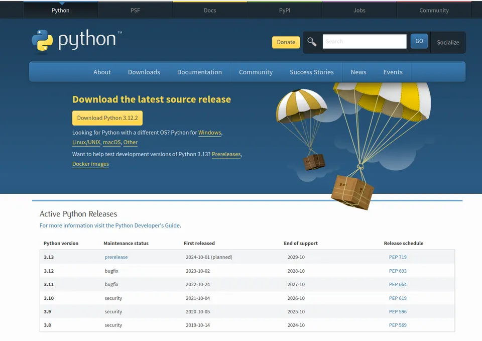
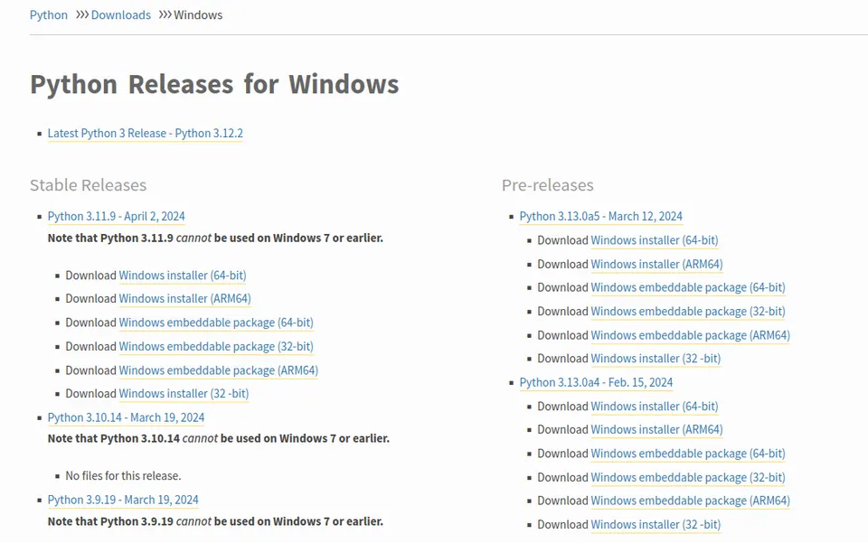

Aby rozpocząć programowanie w Pythonie, konieczne jest przygotowanie odpowiedniego środowiska pracy. Dla większości użytkowników oznacza to pobranie i zainstalowanie odpowiedniej wersji interpretera Pythona. Poniżej znajduje się szczegółowy przewodnik dotyczący instalacji Pythona w systemie Windows.
Otwórz przeglądarkę internetową i wejdź na stronę Python z linkami do pobrania plików.

W sekcji "Python Releases for Windows", znajdź najnowszą stabilną wersję Pythona dedykowaną dla systemu Windows. Kliknij w odpowiedni link, aby rozpocząć pobieranie instalatora.

Po zakończeniu pobierania, lokalizuj plik instalacyjny (zwykle w folderze "Pobrane") i uruchom go, klikając dwukrotnie.
Po uruchomieniu instalatora pojawi się okno konfiguracji instalacji Pythona. Zwróć uwagę na opcję "Add Python to PATH". Zalecamy zaznaczenie tej opcji, ponieważ umożliwia ona uruchamianie Pythona z dowolnego miejsca w wierszu poleceń bez konieczności podawania pełnej ścieżki do interpretera.
Masz dwie opcje: "Install Now" (zainstaluj teraz) lub "Customize installation" (dostosuj instalację). Wybierz "Customize installation" jeśli chcesz dostosować szczegóły instalacji, takie jak lokalizacja instalacji, dodatkowe opcje itp. W przeciwnym razie kliknij "Install Now", aby użyć domyślnych ustawień.
Kontynuuj proces instalacji, postępując zgodnie z instrukcjami wyświetlanymi przez instalator. Instalator może poprosić o potwierdzenie uprawnień administratora - zaakceptuj te prośby, aby kontynuować.
Po zakończeniu instalacji pojawi się okno z potwierdzeniem. Możesz zamknąć instalator.
Aby upewnić się, że instalacja przebiegła prawidłowo, otwórz wiersz poleceń (np. cmd lub PowerShell). Wpisz komendę python --version i naciśnij Enter. Jeśli instalacja została przeprowadzona prawidłowo, powinieneś zobaczyć informację o zainstalowanej wersji Pythona.
python --versionPrawidłowy wynik powinien wyglądać mniej więcej tak:
Python 3.9.2Python jest często używany wraz z dodatkowymi narzędziami i bibliotekami. Najważniejszym narzędziem jest pip, menedżer pakietów dla Pythona, który jest zwykle instalowany automatycznie razem z Pythonem. Możesz sprawdzić jego wersję za pomocą polecenia:
pip --versionPo wykonaniu powyższego polecenia na systemie Windows, wyświetli się informacja o zainstalowanej wersji pip oraz ścieżka do jego lokalizacji. Przykładowy wynik może wyglądać następująco:
pip 23.0.1 from C:\Python310\lib\site-packages\pip (python 3.10)Co to znaczy?
pip 23.0.1 – Informuje o zainstalowanej wersji pip.from C:\Python310\lib\site-packages\pip – Pokazuje ścieżkę, gdzie pip jest zainstalowany. Na Windowsie ścieżki są zazwyczaj w formacie C:\ścieżka\do\python\lib\site-packages\pip.(python 3.10) – Określa wersję Pythona, z którą pip jest powiązany.Aby ułatwić sobie pracę z Pythonem, warto zainstalować środowisko programistyczne (IDE). Popularne IDE dla Pythona to:
Każde z tych IDE oferuje różnorodne funkcje, takie jak podświetlanie składni, autouzupełnianie kodu, debugowanie i wiele innych, które mogą znacznie ułatwić programowanie w Pythonie. Wybór odpowiedniego narzędzia zależy od Twoich preferencji oraz specyficznych potrzeb projektów, nad którymi pracujesz.
| Narzędzie | Typ | Autouzupełnianie | Debugger | Terminal | Darmowe? |
|---|---|---|---|---|---|
| PyCharm | Pełne IDE | Zaawansowane | Tak | Tak | Community (płatna Pro) |
| VS Code | Edytor + wtyczki | Dobre (Pylance) | Tak | Tak | Tak |
| Sublime Text | Edytor + wtyczki | Podstawowe | Nie | Tak | Shareware |
| Jupyter | Notebook | Dobre | Ograniczony | Nie | Tak |
| Thonny | IDE dla początkujących | Podstawowe | Tak | Tak | Tak |
Na macOS Python 3 można zainstalować na kilka sposobów:
.pkg).brew install pythonbrew install pyenv
pyenv install 3.12.0
pyenv global 3.12.0Większość dystrybucji Linuksa posiada preinstalowanego Pythona. Aby zainstalować lub zaktualizować:
sudo apt update
sudo apt install python3 python3-pip python3-venvSprawdzenie wersji:
python3 --version
pip3 --version| Metoda | System | Zarządzanie wersjami | Izolacja środowisk | Łatwość |
|---|---|---|---|---|
| Oficjalny instalator | Windows/macOS | Ręczne | Wymaga venv | Bardzo łatwa |
| Homebrew | macOS | Częściowe | Wymaga venv | Łatwa |
| apt/dnf | Linux | Systemowa wersja | Wymaga venv | Łatwa |
| pyenv | macOS/Linux | Pełne | Wymaga venv | Średnia |
| Anaconda/Miniconda | Wszystkie | Pełne | Wbudowana (conda) | Łatwa |
| Problem | Możliwa przyczyna | Rozwiązanie |
|---|---|---|
python nie jest rozpoznawane |
Python nie dodany do PATH | Reinstalacja z zaznaczeniem "Add to PATH" |
pip nie działa |
pip nie zainstalowany lub nie w PATH | python -m ensurepip --upgrade |
| Konflikty wersji Python 2 i 3 | Obie wersje zainstalowane | Używaj python3 i pip3 jawnie |
| Brak uprawnień przy instalacji pakietów | Instalacja w katalogu systemowym | Użyj --user lub środowiska wirtualnego |
| Moduł nie znaleziony po instalacji | Zainstalowany w innym środowisku | Sprawdź which python / where python |
Po pomyślnej instalacji Pythona warto wykonać kilka kroków przygotowawczych:
python -m venv moje_srodowiskomoje_srodowisko\Scripts\activatemacOS/Linux: source moje_srodowisko/bin/activate
Zainstaluj przydatne pakiety:
pip install ipython black pytestpython -c "print('Hello, Python!')"moj_projekt/
├── moje_srodowisko/ # środowisko wirtualne (nie dodawaj do git)
├── src/ # kod źródłowy
│ ├── __init__.py
│ └── main.py
├── tests/ # testy
│ └── test_main.py
├── requirements.txt # zależności
└── README.md # dokumentacjaTa struktura jest punktem wyjścia dla większości projektów w Pythonie i ułatwia współpracę z innymi programistami.